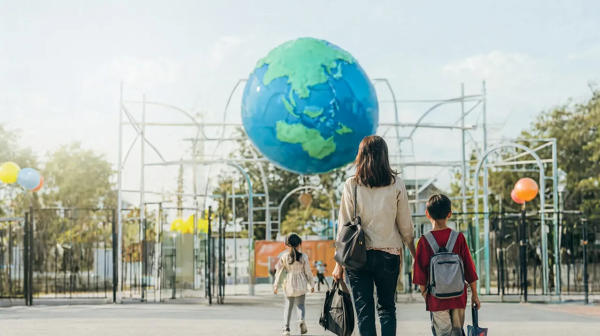

오사카 2박 3일 가족 일정
USJ 하루는 지키고 나머지는 줄인, 초등 자녀와 가는 오사카 압축 코스

성인 2명과 초등학생 자녀 1명이 난바에서 2박 하는 압축 코스입니다. 3박 4일 코스에서 USJ 하루는 그대로 두고 나머지를 줄였습니다. 하루 방문지는 2~3곳이고 오후에는 숙소에서 쉽니다.
이런 가족에게 맞아요휴가가 짧아 가볍게 다녀오고 싶은 가족, USJ가 목적이고 나머지는 먹거리와 산책으로 충분한 가족
코스 한눈에 보기
- 1일차간사이공항 → 난바 체크인 → 도톤보리·신사이바시 산책도착일은 가볍게
- 2일차USJ 종일 (슈퍼 닌텐도 월드 중심)방문일 지정 입장권 필수
- 3일차구로몬 시장 → 공항, 또는 가이유칸 → 공항항공 시각에 따라 두 가지 중 선택
1일차도착일, 난바 산책
- 도착
간사이공항 → 난바
제1터미널에서 난카이선을 탑니다. 짐이 많으면 전 좌석 지정석인 라피트, 짐이 적으면 공항급행이 편합니다. 저가 항공으로 제2터미널에 내리면 셔틀버스로 7~10분이 더 걸립니다.
라피트 약 38분 (어른 1,670엔) · 공항급행 약 45분
- 오후
숙소 체크인, 1시간 쉬기
- 저녁
도톤보리 강변 → 신사이바시스지 상점가
입장료 없는 거리 산책입니다. 분위기만 보고 저녁은 일찍 먹습니다.
늦게 도착한다면공항 출발 라피트는 밤 10시대, 공항급행은 밤 11시대에 끊깁니다. 늦은 항공편이면 막차 시각을 미리 확인하세요.
2일차USJ 하루
- 아침
난바 → 유니버설시티
오사카 메트로로 니시쿠조까지 가서 JR 유메사키선으로 갈아탑니다. 역에서 파크까지 걸어서 약 5분입니다.
약 32분 · 니시쿠조 환승
- 오전
개장 직후 슈퍼 닌텐도 월드
시간 지정권이 필요할 수 있으니 공식 앱을 미리 설치합니다.
- 마리오 카트: 107cm 이상 (122cm 미만은 보호자 동승)
- 요시 어드벤처: 92cm 이상
- 플라잉 다이노소어: 132cm 이상
- 점심 이후
쇼와 실내 시설 위주로 속도 줄이기
같은 날 재입장이 안 되므로 쉬는 것도 파크 안에서 해결합니다.
- 저녁
저녁 쇼 보고 숙소로
닌텐도 월드, 다른 구역 한 곳, 저녁 쇼 정도면 충분합니다.
3일차마지막 날, 두 가지 선택
항공이 정오 전후라면
- 오전
구로몬 시장 잠깐
체크아웃 후 닛폰바시역 10번 출구 옆 시장을 짧게 둘러봅니다. 지붕 있는 시장 거리 약 580m입니다.
- 출발
난바 → 간사이공항
라피트 약 37~38분 · 공항급행 약 43~45분
항공이 오후 늦게(17시 이후)라면
- 오전
가이유칸 수족관
오사카코역 1번 출구에서 걸어서 약 5분, 관람은 약 2시간입니다. 재입장이 안 되니 화장실과 간식을 챙겨 들어갑니다.
- 점심
덴포잔 마켓플레이스
가이유칸 입장권을 보여 주면 쿠폰을 받을 수 있습니다. 점심 후 바로 공항으로 갑니다.
공항 가는 시간 계산체크인 마감(대한항공·제주항공은 국제선 출발 60분 전), 열차 약 40분, 난바역 승강장까지 걷는 시간 20~30분을 더해 거꾸로 계산하세요. 면세 쇼핑을 했다면 더 일찍 도착합니다. 면세 환급 절차 보기
비 오는 날
2박 3일은 여유 날이 없어 USJ 날짜를 바꾸기 어렵습니다. 비가 예보되면 실내 시설을 먼저 타고 야외 쇼는 건너뛰는 식으로 줄이세요. 3일차 가이유칸은 실내라 비에 강합니다.
미리 예약할 것
- USJ 스튜디오 패스 (필수): 방문일을 정해서 삽니다. 어른 8,400엔부터, 날짜별로 다릅니다.
- 슈퍼 닌텐도 월드 시간 지정권 (상황에 따라): 사전 구매형 또는 당일 앱 배포
- 익스프레스 패스 (선택): 대기 시간을 줄이고 싶을 때
- 가이유칸 전자 입장권 (권장): 입장 시각을 미리 정해 둡니다.
같이 보면 좋은 글
- 오사카 3박 4일 가족 일정: 하루 여유를 더한 코스
- 오사카 여행 가이드
- 출국 전 체크리스트
출처
USJ 공식 사이트와 공식 인가 판매처, 가이유칸 공식 사이트, 오사카 메트로 공식, 난카이 철도 안내(내비타임 일본 여행, 오사카 스테이션), 시티레일스, 일본 세관. 요금과 운행 시각은 바뀔 수 있으니 이용 전 공식 안내를 확인하세요.